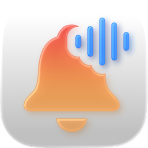
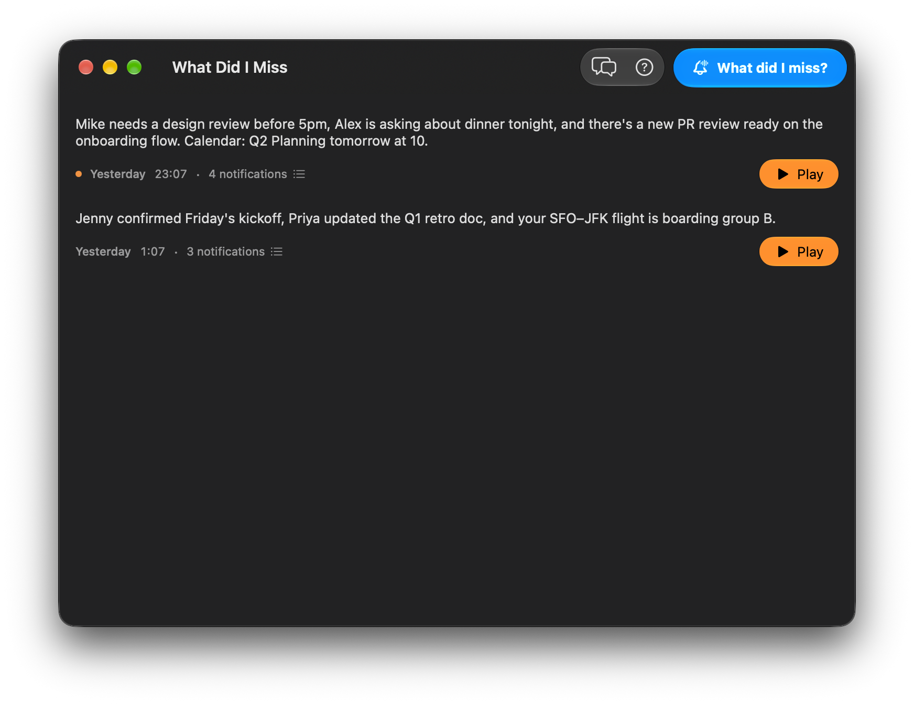

What Did I Miss
En opplest oppsummering av varslene du gikk glipp av, rett fra menylinjen.

Varslene du gikk glipp av, oppsummert og lest høyt.
Sett deg ved Macen igjen, og la bjellen i menylinjen fortelle deg hva som har skjedd. What Did I Miss samler alle varslene du fikk mens du var borte, koker dem ned til en kort oppsummering og leser den høyt – så du kan fortsette med det du holdt på med.Versjon 1.8.0

Spill av hvilken som helst oppsummering på nytt, og se alle varslene bak den.
Tidligere oppsummeringer vises i hovedvinduet med tidspunktet de ble laget og antall varsler. Klikk på Spill av for å høre lyden igjen – uten ny kostnad for talesyntese – eller åpne detaljarket for å se alle varslene som ble tatt med, med symboler, titler og leveringstidspunkt.Oppsummeringer lages på enheten med Apple Intelligence.
Relaterte varsler grupperes og kokes ned til to til fire setninger i muntlig stil. Varslene dine forlater aldri Macen – bare den korte oppsummeringsteksten sendes over nettet.En gratis innebygd stemme, eller en hvilken som helst ElevenLabs-stemme.
Som standard leses oppsummeringer av macOS-stemmen du velger – gratis, uten nett og uten konto. For en mer naturlig lyd kan du legge til din egen API-nøkkel fra ElevenLabs og velge blant alle stemmene på kontoen din – ferdiglagde, klonede eller fra Voice Library. Velg Turbo v2.5 for balansert kvalitet, Multilingual v2 for andre språk eller Flash v2.5 for lavest forsinkelse.Personvern fra grunnen av.
Varsler leses lokalt fra macOS, oppsummeres lokalt av Apple Intelligence og lastes aldri opp noe sted. Med den innebygde stemmen forlater ingenting Macen din. Hvis du bruker ElevenLabs, sendes bare den korte oppsummeringsteksten til ElevenLabs for opplesing – og API-nøkkelen din ligger i nøkkelringen i macOS.Vanlige spørsmål
Hva er What Did I Miss?
What Did I Miss er en menylinjeapp for macOS som samler varslene du mottok mens du var borte, oppsummerer dem med Apple Intelligence og leser oppsummeringen høyt med en ElevenLabs-stemme. Den er laget for øyeblikket når du setter deg ved Macen igjen og vil ha en rask, muntlig oppdatering i stedet for å bla gjennom Varslingssenter.
Er dette en offisiell app fra Apple eller ElevenLabs?
Nei. Dette er en uavhengig tredjepartsapp. Den er ikke laget, godkjent eller vedlikeholdt av Apple, ElevenLabs eller noen av appene den oppsummerer varsler fra.
Hva koster det?
Appen er gratis. Oppsummeringer genereres på enheten av Apple Intelligence uten kostnad, og den innebygde macOS-stemmen er også gratis. Hvis du vil ha en mer naturlig stemme, kan du eventuelt koble til din egen API-nøkkel fra ElevenLabs – ElevenLabs har et gratisnivå som vanligvis er nok til daglig bruk.
Trenger jeg en ElevenLabs-konto?
Nei. Uten API-nøkkel leses oppsummeringer høyt av den innebygde macOS-stemmen, som er gratis og fungerer uten nett. ElevenLabs er valgfritt og endrer bare hvordan oppsummeringen høres ut.
Hva er systemkravene?
En Mac som støtter Apple Intelligence, med Apple Intelligence slått på i Systeminnstillinger – oppsummeringen genereres på enheten og kan ikke lages uten. Internettforbindelse trengs bare hvis du bruker en ElevenLabs-stemme eller vil se etter oppdateringer.
Hvorfor trenger appen full disktilgang?
macOS lagrer leverte varsler i en beskyttet SQLite-database i Darwin-brukermappen. For å lese den filen kreves full disktilgang. Uten det har appen ingen mulighet til å se hvilke varsler du har mottatt.
Hvordan får jeg en ElevenLabs-API-nøkkel?
Logg inn på elevenlabs.io, klikk på avataren din, velg API Keys og opprett en ny nøkkel. Du kan enten beholde full tilgang eller slå på både Text to Speech og Voices – uten Voices-tillatelsen forblir stemmelisten i appen tom. Lim inn nøkkelen under Innstillinger → Stemme → API-nøkkel. ?-knappen ved siden av feltet viser deg de samme trinnene.
Hvor blir det av varslene mine?
Ingen steder. Varsler leses lokalt fra macOS og oppsummeres på enheten av Apple Intelligence – de lastes aldri opp. Hvis du bruker ElevenLabs, sendes bare den korte oppsummeringsteksten til ElevenLabs for opplesing. Med den innebygde macOS-stemmen forlater ingenting Macen din.
Hvor lagres ElevenLabs-API-nøkkelen min?
API-nøkkelen din lagres i nøkkelringen i macOS. Den forlater aldri Macen din, bortsett fra når appen sender en forespørsel til ElevenLabs på dine vegne.
Kan jeg spille av en tidligere oppsummering på nytt?
Ja. Åpne hovedvinduet, finn oppsummeringen i listen og klikk på Spill av. Klikk på Stopp for å avbryte. ElevenLabs-lyd lagres sammen med hver oppsummering, så ny avspilling bruker ikke flere av ElevenLabs-tegnene dine.
Kan jeg se en oppsummering uten å få den lest høyt?
Ja. Åpne Innstillinger → Stemme og slå av «Les opp varsler». Oppsummeringen vises fortsatt på skjermen, bare uten lyd – nyttig på stille steder eller i møter. Slå innstillingen på igjen for å få oppsummeringen lest høyt. Den er på som standard og fungerer som hovedbryter for all lyd fra oppsummeringer.
Kan appen automatisk være stille under en fokusmodus, for eksempel Jobb?
Ja, på to måter. For en generell regel åpner du Innstillinger → Stemme og slår på «Stille i alle fokusmoduser» – så lenge en fokusmodus eller Ikke forstyrr er på i macOS, vises oppsummeringer på skjermen uten lyd. Hvis du vil ha ulik atferd for hver fokusmodus – for eksempel stille på Jobb, men opplest i Personlig – legger du til What Did I Miss som fokusfilter: Systeminnstillinger → Fokus → velg en fokusmodus → Fokusfiltre → Legg til filter → What Did I Miss, og still deretter inn «Les oppsummeringer høyt» for den fokusmodusen. Bryteren «Les opp varsler» i appen er fortsatt hovedbryteren: Når den er av, er oppsummeringer alltid stille.
Fortsetter appen å kjøre i bakgrunnen?
Ja. What Did I Miss ligger i menylinjen og holder seg unna Dock til du åpner et av vinduene.
Kan jeg starte en oppsummering fra Snarveier, Spotlight eller Siri?
Ja. What Did I Miss har en appsnarvei, så du kan kjøre den fra Snarveier-appen, starte den ved å spørre Siri eller skrive en frase som «Hva gikk jeg glipp av» eller «Oppdater meg» i Spotlight. Når snarveien kjøres, lages oppsummeringen og leses høyt, akkurat som når du klikker på menylinjeobjektet.
Hva om Apple Intelligence ikke er tilgjengelig på Macen min?
Apple Intelligence er påkrevd fordi oppsummeringen genereres på enheten. Hvis det ikke er tilgjengelig (maskinvaren støttes ikke, det er slått av i Systeminnstillinger, eller det lastes fortsatt ned), mislykkes oppsummeringen. Slå det på under Systeminnstillinger → Apple Intelligence og Siri, og prøv igjen.
Samler dere inn analysedata?
Appen sender et lite antall anonyme brukshendelser (for eksempel «oppsummering forespurt») og krasjrapporter for å bidra til å forbedre den. Varselinnhold, oppsummeringer, API-nøkler eller personopplysninger blir aldri tatt med. Du kan slå dette av under Innstillinger → Generelt → Anonym analyse.
Klar for en opplest oppsummering?
Versjon 1.8.0